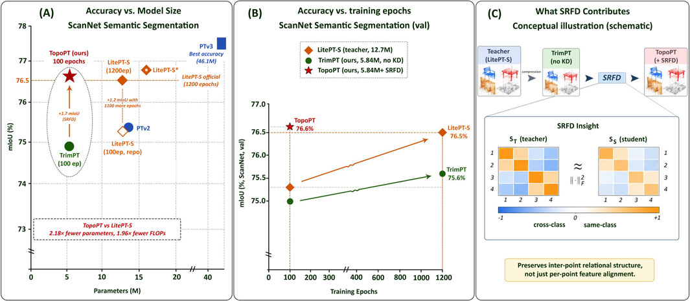
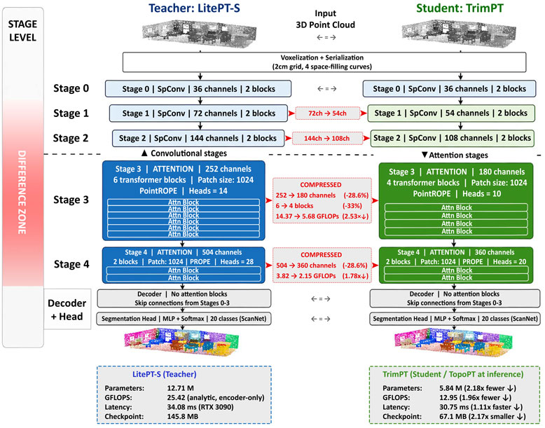
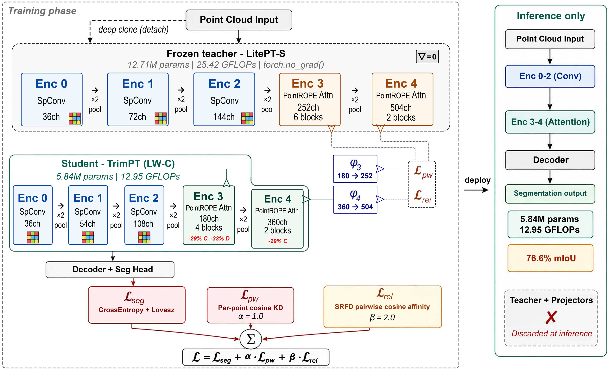
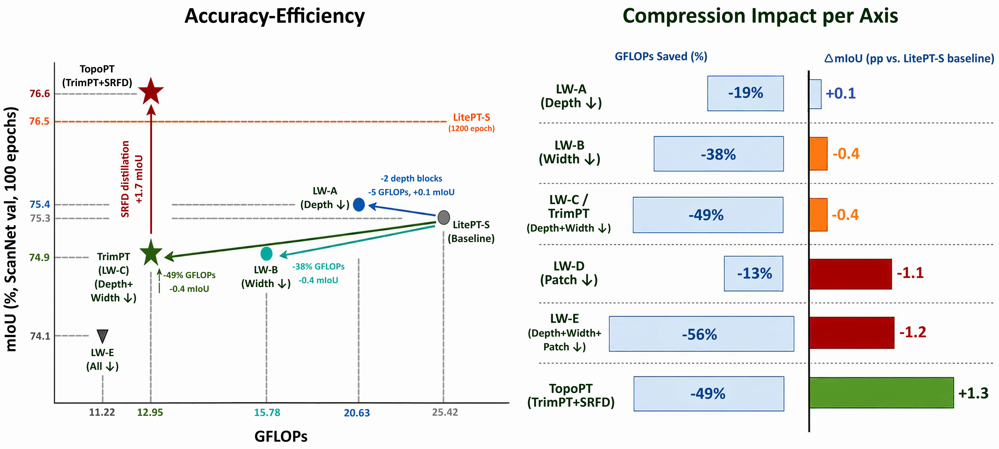
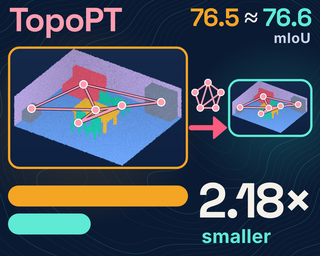

NeurIPS 2026, Main Track, Poster
Relational Feature Distillation for Lightweight 3D Point Cloud Segmentation
TopoPT shrinks LitePT-S to TrimPT, a student with 5.84 M parameters for semantic segmentation (7.6 M for instance segmentation), and trains it to reproduce how the teacher’s features relate to one another, not just their values. On ScanNet semantic segmentation it matches the full-size teacher with 2.18× fewer parameters and 1.96× fewer FLOPs.
Sep 24, 2026Accepted at NeurIPS 2026 (main track, poster).
- Parameters (semantic), 2.18× fewer than LitePT-S
- 5.84 M
- GFLOPs (semantic), 1.96× fewer than LitePT-S
- 12.95
- ScanNet val mIoU (LitePT-S official: 76.5)
- 76.6 %
Match the relations, not the features
SRFD does not ask the student to copy the teacher’s feature vectors. It asks the student’s tokens to be similar to each other in the same pattern as the teacher’s. Play the demo to watch a small student recover that pattern.
Teacher similarity
LitePT-S, frozen. 16-D token features.
Student similarity
TrimPT. 6-D features, random at step 0.
Gap
Absolute difference. Darker is larger.
Illustration on synthetic tokens, not model output: 24 tokens in four groups. The student’s features are updated by gradient descent on the relational loss only, and the slider replays that run. The gap is the Frobenius distance between the two matrices. In the paper, SRFD uses up to 512 sampled tokens per stage, a learned projector, and a pointwise loss alongside it.
At a glance
After 100 epochs, TopoPT reaches 76.6% mIoU on ScanNet, level with the official LitePT-S result (76.5%) that needs 1200 epochs and more than twice the parameters.
A compression study
We shrink LitePT-S along encoder depth, channel width and attention patch size, and keep the 1024-token attention window. The result, TrimPT, has 5.84 M parameters and 12.95 GFLOPs.
A training-only objective
SRFD matches how tokens relate to each other at the compressed attention stages. The teacher and projectors are dropped after training, so inference cost does not change.
Gains on every benchmark
TopoPT improves on TrimPT for semantic segmentation on ScanNet, nuScenes and Structured3D, and for instance segmentation on ScanNet and ScanNet200.

Method
TopoPT has two parts: a compact student architecture, TrimPT, and a training-only objective, SRFD. Nothing from SRFD remains at inference time.
TrimPT: a compressed student
TrimPT comes from a controlled compression study of LitePT-S along three axes: encoder depth, channel width and attention patch size.
| Compression axis | Effect |
|---|---|
| Stage-3 depth, 6 to 4 blocks | Minor accuracy drop, meaningful FLOP reduction |
| Channel width, 504 to 360 at the widest stage | Large compute saving, modest accuracy drop |
| Attention patch, 1024 to 512 | Accuracy degrades, with limited measured FLOP benefit |
TrimPT combines the depth and width reductions and keeps the full 1024-token attention window. Channels are (36, 54, 108, 180, 360) and stage depths are (2, 2, 2, 4, 2).

SRFD: stage-wise relational feature distillation
SRFD is applied at stages 3 and 4, the compressed attention stages. At each stage a learned projector maps student features to the teacher’s width. The loss has two terms:
- Pointwise loss Lpw: cosine alignment between the projected student features and the frozen teacher features.
- Relational loss Lrel: the Frobenius distance between the teacher’s and the student’s pairwise cosine-similarity matrices, over up to 512 aligned tokens per stage.
L = Lseg + α·Lpw + β·Lrelα = 1.0, β = 2.0
After training, the teacher and the projectors are thrown away. TopoPT therefore has the same inference architecture, checkpoint size, FLOPs and latency as TrimPT.

Results
Distillation improves the same architecture on every benchmark listed below. Gains are for TopoPT over TrimPT trained for the same number of epochs.
| Benchmark | Metric | Epochs | TrimPT | TopoPT | Gain |
|---|---|---|---|---|---|
| ScanNet, semantic | mIoU | 100 | 74.9 | 76.6 | +1.7 |
| nuScenes, semantic | mIoU | 50 | 81.2 | 81.4 | +0.2 |
| Structured3D, semantic | mIoU | 50 | 69.4 | 70.3 | +0.9 |
| ScanNet, instance | mAP50 | 100 | 63.1 | 63.9 | +0.8 |
| ScanNet200, instance | mAP50 | 100 | 26.3 | 33.0 | +6.7 |
Longer training of TrimPT alone helps less than SRFD in two cases: ScanNet semantic reaches 75.6 mIoU after 1200 epochs (TopoPT: 76.6 after 100), and ScanNet200 reaches 31.7 mAP50 after 800 epochs (TopoPT: 33.0 after 100). On ScanNet instance segmentation, 800 epochs of TrimPT reach 65.1 against 63.9 for TopoPT at 100.
Model zoo
Every row links to its config in this repository and its checkpoint on Hugging Face. The semantic-segmentation models have 5.8 M parameters; the instance-segmentation models have 7.6 M.
| Model | Params | Benchmark | Epochs | val mIoU | Config | Checkpoint |
|---|---|---|---|---|---|---|
| TrimPT | 5.8M | ScanNet | 100 | 74.9 | config | download |
| TrimPT | 5.8M | ScanNet | 1200 | 75.6 | config | download |
| TopoPT | 5.8M | ScanNet | 100 | 76.6 | config | download |
| TrimPT | 5.8M | nuScenes | 50 | 81.2 | config | download |
| TopoPT | 5.8M | nuScenes | 50 | 81.4 | config | download |
| TrimPT | 5.8M | Structured3D | 50 | 69.4 | config | download |
| TopoPT | 5.8M | Structured3D | 50 | 70.3 | config | download |
Checkpoints for the compression study (Table 2 of the paper). All models are trained for 100 epochs on ScanNet semantic segmentation.
| Model | Description | Params (M) | mIoU | Checkpoint |
|---|---|---|---|---|
| LitePT-S (repro) | Official architecture, reproduced | 12.7 | 75.3 | download |
| LW-A | Depth reduction only | 11.2 | 75.4 | download |
| LW-B | Width reduction only | 6.6 | 74.9 | download |
| LW-C (TrimPT) | Depth and width reduction | 5.8 | 74.9 | download |
| LW-D | Patch size reduction only | 12.7 | 74.2 | download |
| LW-E | Depth, width and patch size | 5.8 | 74.1 | download |

Efficiency
Profiled on an NVIDIA RTX 3090 at batch size 1, averaged over 300 forward passes after 10 warm-up iterations. TopoPT and TrimPT share the same deployed network, so their costs are the same. All figures here are for the semantic-segmentation network.
Parameters12.71 M to 5.84 M
FLOPs25.42 G to 12.95 G
Checkpoint size145.8 MB to 67.1 MB
Latency34.08 ms to 30.78 ms
GPU memory1.332 GB to 1.211 GB
The savings in parameters, FLOPs and size are about half. Latency and memory improve by roughly a tenth on ScanNet, which is a smaller gain than the FLOP count suggests.
| Model | Dataset | Params (M) | GFLOPs | Latency (ms) | FPS | Mem (GB) | Size (MB) |
|---|---|---|---|---|---|---|---|
| LitePT-S | ScanNet | 12.71 | 25.42 | 34.08 | 29.34 | 1.332 | 145.8 |
| TrimPT | ScanNet | 5.84 | 12.95 | 30.75 | 32.52 | 1.211 | 67.1 |
| TopoPT | ScanNet | 5.84 | 12.95 | 30.78 | 32.49 | 1.211 | 67.1 |
| LitePT-S | nuScenes | 12.71 | 25.42 | 35.81 | 27.93 | 0.717 | 145.7 |
| TrimPT | nuScenes | 5.84 | 12.95 | 28.72 | 34.82 | 0.432 | 67.0 |
| TopoPT | nuScenes | 5.84 | 12.95 | 28.84 | 34.68 | 0.432 | 67.0 |
Talk, slides and poster
Materials from our NeurIPS 2026 presentation.

Slides
Poster


Get started
TopoPT builds on the LitePT codebase, so the environment follows LitePT’s setup.
Environment
git clone https://github.com/m-saeid/TopoPT.git
cd TopoPT
conda create -n topopt python=3.10
conda activate topopt
# PyTorch: adjust for your CUDA version
pip install torch==2.4.1 torchvision==0.19.1 --index-url https://download.pytorch.org/whl/cu124
pip install -r requirements.txt
pip install spconv-cu124
pip install git+https://github.com/Dao-AILab/flash-attention.gitPointROPE
Set all_cuda_archs in libs/pointrope/setup.py to your GPU (8.6 for an RTX 3090, 9.0 for an H100). A slower pure-PyTorch fallback exists if you cannot compile CUDA.
cd libs/pointrope
python setup.py install
cd ../..Data and teacher checkpoint
Prepare datasets as in Pointcept and place them in TopoPT/data. SRFD training also needs a pretrained LitePT-S teacher: download it from the LitePT model zoo and put it where the config expects it.
Train
# ScanNet semantic segmentation: TrimPT, then TopoPT (SRFD)
sh scripts/train.sh -g 4 -d scannet -c semseg-lw-c-100epoch -n semseg-lw-c-100epoch
sh scripts/train.sh -g 4 -d scannet -c semseg-lw-c-kd-100epoch -n semseg-lw-c-kd-100epoch
# ScanNet200 instance segmentation with TopoPT
sh scripts/train.sh -g 4 -d scannet200 -c insseg-lw-c-kd-100epoch -n insseg-lw-c-kd-100epochOther benchmarks follow the same pattern. Config names are in the model zoo above and in configs/.
Test a checkpoint
export PYTHONPATH=./
python tools/test.py \
--config-file configs/scannet/semseg-lw-c-kd-100epoch.py \
--num-gpus 4 \
--options save_path=exp/scannet/semseg-lw-c-kd-100epoch \
weight=exp/scannet/semseg-lw-c-kd-100epoch/model/model_best.pthCitation
If you find this work useful, please cite it, and please cite LitePT, on which TopoPT is built.
@inproceedings{saeid2026rfd,
author = {Saeid, Mohammad and Salarpour, Amir and MohajerAnsari, Pedram and Pesé, Mert D},
booktitle = {Annual Conference on Neural Information Processing Systems (NeurIPS'26)},
title = {Relational Feature Distillation for Lightweight 3D Point Cloud Segmentation},
year = {2026}
}@inproceedings{yuelitept2026,
title={{LitePT: Lighter Yet Stronger Point Transformer}},
author={Yue, Yuanwen and Robert, Damien and Wang, Jianyuan and Hong, Sunghwan and Wegner, Jan Dirk and Rupprecht, Christian and Schindler, Konrad},
booktitle={IEEE/CVF Conference on Computer Vision and Pattern Recognition (CVPR)},
year={2026}
}